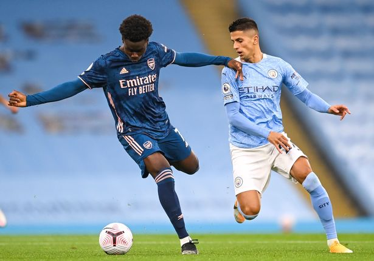

Final Score: Manchester City 1-0 Arsenal
The lack of Kevin De Bruyne stunted Manchester City’s chance creation in this game, but a first-half Raheem Sterling goal was all the home team needed to get revenge for their FA Cup semifinal defeat. Arsenal came in with a game plan to keep things tight, and although they did just that, it wasn’t enough to pick up any points from the match. Here are five key takeaways:
2. Arsenal Are Improving, But They Have A Chance Creation Problem
Although it seems like we’ve been saying this since Arteta arrived, Arsenal really do seem like they are improving their level of play. They look great in buildup, dealing with City’s high press well early in the game. Arsenal look like they have the players required to play out from the back in the way Arteta wants to. Unfortunately, once they get into the final third, the team never seems like they know what to do next. Maybe the buildup play is what is keeping the offense from lighting up at the other end of the field (they do seem to attack better on the counter), but I still feel like it’s a personnel problem. A creative threat was what they needed this summer, and while they did bring in a solid option in Willian, it seems as though one more top class creative midfielder was needed. Aubameyang is a great goalscorer, and he can even outperform his expected goals by a fairly wide margin as we’ve seen in recent seasons. But if Arsenal truly want to get back up to that next level, they will likely need more and better chance creators.
3. A Quiet Night, But Ederson Comes Up Big When Needed
Though he has had a rocky start to the season thus far, against Arsenal, Ederson put in an excellent goalkeeping performance despite not having much to do for most of the game. His possession play was good as always, and he was forced to make 3 big saves in the first half. Ederson showed composure and great reflexes on his saves, having to come off of his line on all three, and a one-on-one save against Bukayo Saka was the highlight of his performance. For Arsenal’s best chance of the game, Saka found himself alone in front of goal, but Ederson came off his line, made himself big, and got his chest to what likely should have been a goal for the Gunners. If City are going to play more tight games like this throughout the campaign, Ederson is going to be crucial to their success.
4. Cancelo Does Well In Strange New Role
Joao Cancelo was a standout performer today if for no other reason than the strange new role we saw him play. It was this hybrid midfield/inverted wingback role that allowed him to form a nice combination triangle with Kyle Walker and Riyad Mahrez down the right side. He was very active defensively - with four tackles and three interceptions won - and created three chances - with 0.19 expected assists. We know Guardiola likes to experiment, so I wouldn’t be surprised to see Cancelo used in this way again, especially in the absence of players like Kevin De Bruyne.

5. The Title Race Is Wide Open
Liverpool are facing an injury crisis. Manchester City isn’t quite their usual dominant selves that we’ve grown accustomed to seeing. Most other “top 6” teams are still in a state of transition. This year’s title race is wide open at the moment. While you would still expect one of these teams to be at the top of the table come May, do not be surprised if a team from that next tier (Leicester, Wolves, etc.) is still fighting for the title down the stretch. We’ve already seen some great things from Carlo Ancelotti’s Everton team early on. Perhaps they’ll be able to stick around and give the usual title challengers a run.